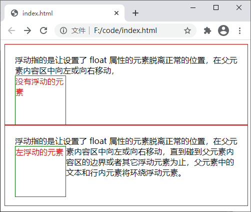
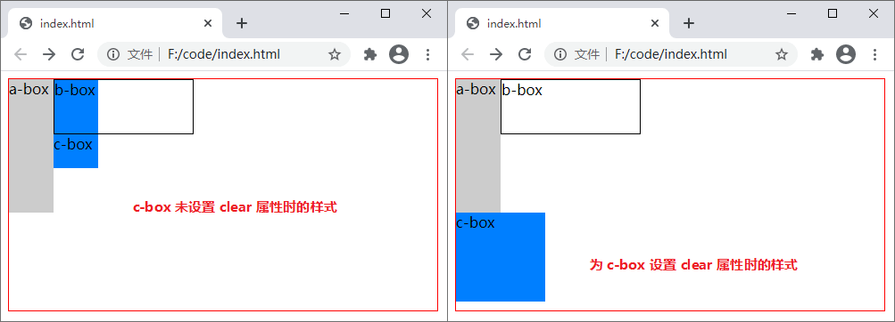

CSS float（浮动）
浮动可以使一个元素脱离自己原本的位置，并在父元素的内容区中向左或向右移动，直到碰到父元素内容区的边界或者其它浮动元素为止。另外，在浮动元素之后定义的文本或者行内元素都将环绕在浮动元素的一侧，从而可以实现文字环绕的效果，类似于 Word 中图文混排。
另外，在使用 float 属性时还需要注意以下几点：
【示例】使用 float 属性为元素设置浮动属性：
下面通过示例来演示一下 clear 属性的使用：
通过运行结果可以看出，若为 a-box、b-box 两个元素设置 float 属性就会导致 c-box 向上移动，与 a-box、b-box 重叠在一起，此时为 c-box 添加 clear 属性清除浮动即可解决这一问题。
注意：浮动（float）属性仅对非绝对定位的元素有效，跟随浮动元素的文本或行内元素将围绕在浮动元素的另一侧，例如向左浮动的话其它元素将围绕在浮动元素的右侧。
float 属性有三个可选值，如下表所示：| 值 | 描述 |
|---|---|
| left | 元素向左浮动 |
| right | 元素向右浮动 |
| none | 默认值，元素不浮动 |
| inherit | 从父元素继承 float 属性的值 |
另外，在使用 float 属性时还需要注意以下几点：
- 如果设置了 float 属性且属性的值不为 none 时，若 display 属性的值为 inline-table，那么 display 实际会被设置为 table，若 display 的属性值为 inline、inline-block、run-in、table-* 等值，那么 display 实际会被设置为 block，其它情况则没有变化；
- 当元素设置了绝对定位或者 display 属性的值为 none 时，float 属性无效；
- 相邻的浮动元素，如果空间足够它们会紧挨在一起，排列成一行。
【示例】使用 float 属性为元素设置浮动属性：
<!DOCTYPE html>
<html>
<head>
<style>
.a-box {
width: 445px;
height: 120px;
border: 1px solid red;
padding: 20px;
overflow: hidden;
}
.b-box {
width: 100px;
height: 100px;
border: 1px solid green;
color: red;
}
.c-box {
width: 445px;
height: 120px;
border: 1px solid red;
padding: 20px;
}
.d-box {
width: 100px;
height: 100px;
border: 1px solid green;
float: left;
color: red;
}
</style>
</head>
<body>
<div class="a-box">
浮动指的是让设置了 float 属性的元素脱离正常的位置，在父元素内容区中向左或向右移动，<div class="b-box">没有浮动的元素</div>直到碰到父元素内容区的边界或者其它浮动元素为止，父元素中的文本和行内元素将环绕浮动元素。
</div>
<div class="c-box">
浮动指的是让设置了 float 属性的元素脱离正常的位置，在父元素内容区中向左或向右移动，<div class="d-box">左浮动的元素</div>直到碰到父元素内容区的边界或者其它浮动元素为止，父元素中的文本和行内元素将环绕浮动元素。
</div>
</body>
</html>
运行结果如下图所示：

图：float 属性演示
图：float 属性演示
清除浮动
元素浮动之后，会对周围的元素造成一定的影响，为了消除这种影响您可以使用 clear 属性来清除浮动，属性的可选值如下：| 值 | 描述 |
|---|---|
| left | 左侧不允许浮动元素 |
| right | 右侧不允许浮动元素 |
| both | 左右两侧均不允许浮动元素 |
| none | 默认值，允许浮动元素出现在左右两侧 |
| inherit | 从父元素继承 clear 属性的值 |
下面通过示例来演示一下 clear 属性的使用：
<!DOCTYPE html>
<html>
<head>
<style>
.box {
width: 480px;
height: 260px;
border: 1px solid red;
}
.a-box {
width: 50px;
height: 150px;
background-color: #CCC;
float: left;
}
.b-box {
width: 155px;
height: 60px;
border: 1px solid black;
float: left;
}
.c-box {
width: 100px;
height: 100px;
background-color: #007FFF;
clear: left;
}
</style>
</head>
<body>
<div class="box">
<div class="a-box">a-box</div>
<div class="b-box">b-box</div>
<div class="c-box">c-box</div>
</div>
</body>
</html>
运行结果如下图所示：

图：clear 属性演示
图：clear 属性演示
通过运行结果可以看出，若为 a-box、b-box 两个元素设置 float 属性就会导致 c-box 向上移动，与 a-box、b-box 重叠在一起，此时为 c-box 添加 clear 属性清除浮动即可解决这一问题。
关注公众号「站长严长生」，在手机上阅读所有教程，随时随地都能学习。内含一款搜索神器，免费下载全网书籍和视频。

微信扫码关注公众号